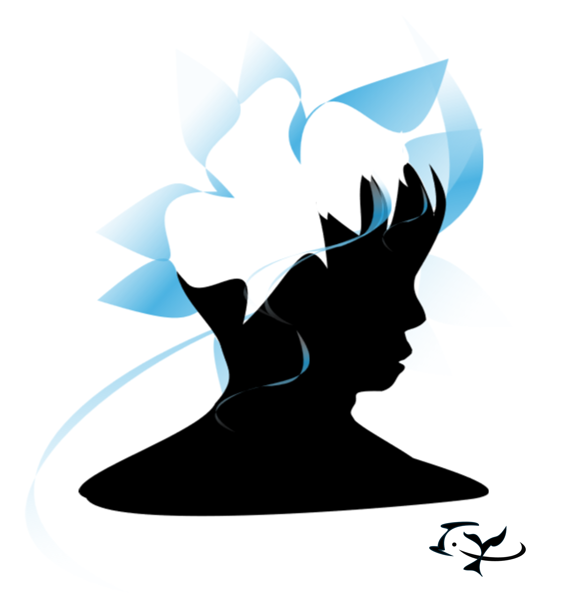
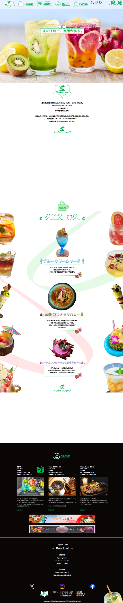
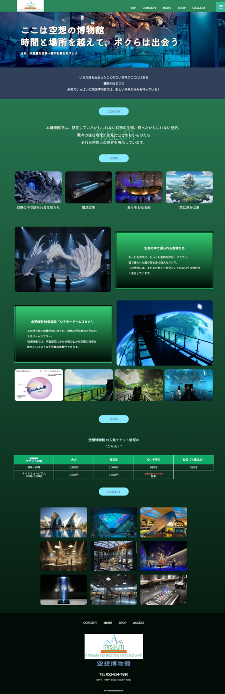
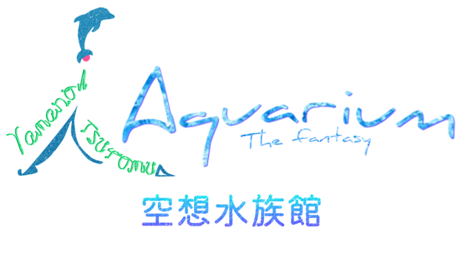
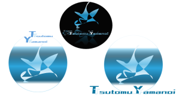
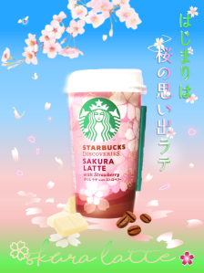
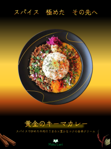
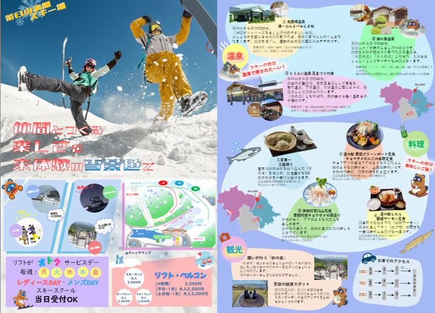
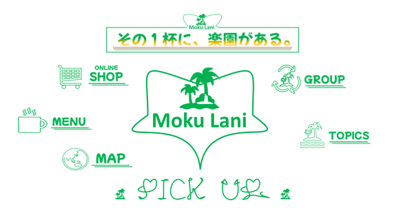

← → キーで画像切り替え
画像以外をクリックもしくは ESCキーで戻ります。
← → キーで画像切り替え
画像以外をクリックもしくは ESCキーで戻ります。
Tsutomu Yamanoi Portfolio Site.

ヤマノイ ツトム。
1982年生まれ。
愛知県名古屋市北区在住。
調理の仕事に14年間従事してきたが、
将来のことを考えて転職を決意。
以前より興味を持っていたWEBデザイナーになるべく、訓練校にてHTML、CSS、静止画編集・画像デザインを学習中。
・MOS 365 （Word. Excel. PowerPoint.）
・HTML／CSS
・ITパスポート ・色彩検定３級 ・そろばん３級
・普通自動車第一種運転免許
ライトノベル、マンガ、ゲーム、VTuberの視聴
スパイスカレーとフルーツドリンクを提供する架空のカフェ
＜Moku Lani＞のWebページです。
コンセプトは「南国の楽園」
大学生～２０代後半までの男女をターゲットにしています。
植物のイメージで緑色をメインに、南国風のカラフルなドリンク＆デザート写真を左右に配置。
画面を落ち着かせるため、背景はシンプルに白色でまとめました。
上のロゴ画像をクリックすると、
実際のWebページを新規ウィンドウで開きます。


空想上にしか存在しない、
未知の世界を展示する博物館
をイメージして作られたWebページです。
コンセプトは「未知への探検」
「少年少女の冒険心を心に持ち続けている大人」をメインターゲットに、 家族連れ、カップルでの観覧を想定しています。
下にスクロールするほど暗く、深い場所へと潜っていくイメージで背景を調整しました。
上のロゴ画像をクリックすると、
実際のWebページを新規ウィンドウで開きます。






架空の水族館のロゴを想定して制作しました。
太陽の光をしっかり反射して、夏の水面がきらめくような爽やかなイメージを重ねています。
WEBサイト「Font Meme」とベジェ曲線を用いて作成しています。
こちらは架空の博物館のロゴを想定して制作しました。
山の麓にどっしりと構える、博物館の建物をイメージしています。
英文の意味は
「幻想的な世界へと誘う博物館」
WEBサイト「Font Meme」とベジェ曲線を用いて作成しています。

こちらは架空のカフェのロゴやアイコンを想定して制作しました。
南国の楽園、緑豊かな島をイメージして緑のカラーで統一しました。 一部にアクセントとして、トロピカルなオレンジ、ピンク、海のブルーを使用しています。
Moku Lani（モク・ラニ）はハワイ語で「天国の島」という意味があります。
ベジェ曲線と図形アイコンを組み合わせています。
いま御覧になられている
Webサイトのロゴとして制作しました。
翼の生えた山が駆けだし、空へと羽ばたくようなイメージ。
円形とベジェ曲線で作成。シンプルな作りを目指しました。

架空のカフェWEBページ内のバナー画像として制作しました。
フェア商品であるカレー２種は赤と青を対比させ、食べ比べを意識するように。
デザートフェアは、商品を知ってもらうためにデザートやドリンクの画像を並べました。
商品写真は他者の著作物です。
こちらはコンビニで販売されていた、STARBUCKS様の商品である
「さくらラテ」のポスターを想定して制作しました。
２０代の働く女性をターゲットにし、春の緑と華やかな桜で彩りました。
商品写真は他者の著作物です。
桜の木の枝、コーヒー豆、ホワイトチョコレートはAIで生成した画像を用いて加工しています。
花びらはベジェ曲線で作成しています。
架空の商品である
「黄金のキーマカレー」のポスター
コンセプトは「黄金」
高級感を出すため、黒背景に金色の光とともに浮かび上がるように商品を配置しました。
AI生成の写真を使用し、ベジェ曲線でお皿に金模様をいれています。
「この冬、遊びにいきたい」をテーマに、
大学生グループをターゲットとした
表裏２面構成の日帰り観光パンフレットを想定して制作しました。
表面に、遊び情報としてのスキー場の案内を。
裏面には、遊んだ帰りに寄りたい周辺の温泉や食事の情報を載せています。
グループ制作です。
自分は表面の上半分とゲレンデマップ、裏面の温泉エリアを担当しました。
キャラクター画像はAI生成、写真は他者の著作物です。
お問い合わせフォームがあったりなかったり